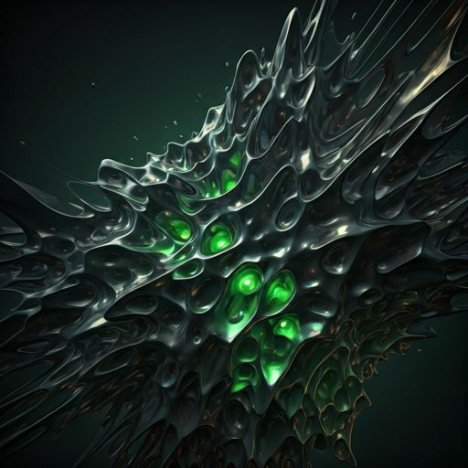

LATEST MODEL: V.04_SYNTHESIS
Synthesizing
the
Unseen.
A journey through the latent space where algorithmic logic meets ethereal beauty. Explore a curated collection of generative art driven by experimental prompt engineering.
